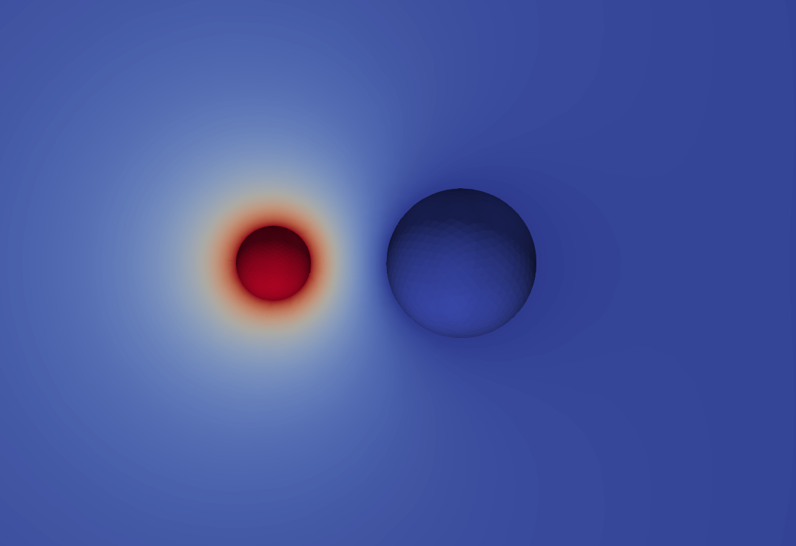
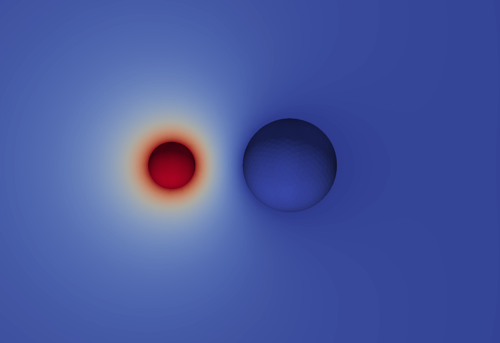

Capacitance Matrix for Two Spheres
The files for this example can be found in the examples/spheres/ directory of the Palace source code.
In this example, we consider two conducting spheres of radii $a$ and $b$, with centers separated by a distance $c > a + b$. The surrounding medium is vacuum. An analytic solution for the capacitance matrix of this configuration exists and is given in [1]. The Maxwell capacitance matrix entries are given by the infinite series
\[\begin{aligned} C_{aa} &= 4\pi\varepsilon_0 ab \sinh{u}\sum_{n=0}^{\infty} \frac{1}{a\sinh{nu}+b\sinh{(n+1)u}} \\ C_{bb} &= 4\pi\varepsilon_0 ab \sinh{u}\sum_{n=0}^{\infty} \frac{1}{b\sinh{nu}+a\sinh{(n+1)u}} \\ C_{ab} &= -4\pi\varepsilon_0 \frac{ab}{c} \sinh{u}\sum_{n=1}^{\infty} \frac{1}{\sinh{nu}} \end{aligned}\]
where the subscript $a$ refers to the sphere with radius $a$ and likewise for $b$. The parameter $u$ is given by
\[\cosh{u} = \frac{c^2-a^2-b^2}{2ab} \,.\]
Here we take the values $a = 1\text{ cm}$, $b = 2\text{ cm}$, and $c = 5\text{ cm}$. A mesh is generated with Gmsh using the mesh.jl Julia script found in the mesh/ directory, which writes the mesh to mesh/spheres.msh. The resulting high-order mesh uses cubically-curved tetrahedral elements, and is pictured below.

The configuration file for the Palace simulation is found in spheres.json. We set the simulation "Type" to "Electrostatic", and add "Terminal" entries for the surface boundary of each sphere, corresponding to the entries of the capacitance matrix we wish to compute. The outer boundary of the computational domain, which is sufficiently far from the spheres, is prescribed a "Ground" boundary condition. We set the "Order" of the finite element approximation to $3$.
The resulting extracted Maxwell capacitance matrix is saved to disk in the CSV file postpro/terminal-C.csv:
i, C[i][1] (F), C[i][2] (F)
1.000000e+00, +1.237470540e-12, -4.771229894e-13
2.000000e+00, -4.771229894e-13, +2.478512490e-12In this case, the analytic solution yields
\[\begin{aligned} C_{aa} &= +1.230518\text{ pF} \\ C_{bb} &= +2.431543\text{ pF} \\ C_{ab} &= -0.4945668\text{ pF} \end{aligned}\]
which is computed using the first $n=12$ terms in the series after which convergence to a relative tolerance of $10^{-12}$ is reached. Thus, the errors in the capacitance coefficients by Palace are $0.57\%$, $1.9\%$, and $3.5\%$, respectively.
The mutual capacitance matrix can be computed from its Maxwell counterpart, and is saved in postpro/terminal-Cm.csv:
i, C_m[i][1] (F), C_m[i][2] (F)
1.000000e+00, +7.603475504e-13, +4.771229894e-13
2.000000e+00, +4.771229894e-13, +2.001389500e-12Additionally, while the typical approach used by Palace for lumped parameter extraction uses the computed field energies, the capacitance can also be calculated by directly integrating the charge on a boundary surface and dividing by the excitation voltage. The configuration file for this example contains this information under config["Boundaries"]["Postprocessing"]["Capacitance"]. The resulting capacitances are written to postpro/surface-C.csv:
i, C[1] (F), C[2] (F)
1.000000e+00, +1.210962236e-12, -4.677852948e-13
2.000000e+00, -4.669431918e-13, +2.425918151e-12and agree closely with the values computed using the default method above, as expected.
Finally, the postpro/paraview directory contains files for visualizing the computed field solutions with ParaView. Below we present the electrostatic potential fields for each terminal solution.
 

References
[1] J. Lekner, Capacitance coefficients of two spheres, Journal of Electrostatics 69 (2011) 11-14.